السلسلة 106
السيارة (صنف B) · 25 سؤال. كل سؤال فيه الصورة والصوت. اختار الجواب (ولا جوج إلا كانو صحاح)، ورك على «تأكيد» باش تشوف واش صبتي.
- 25سؤال
- 20باش تنجح
- 1 – 4جواب واحد ولا أكثر
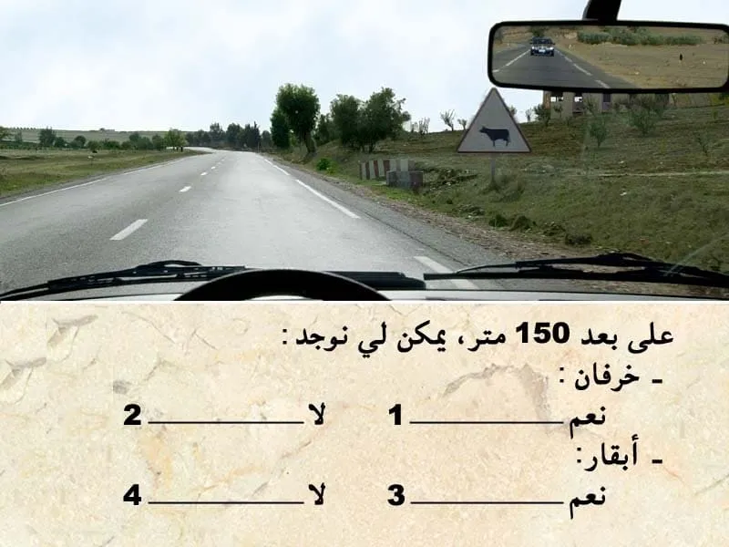
الكلافيي: 1–4 للجواب، Enter للتأكيد وللسؤال الجاي.
السلسلة 106 · النتيجة ديالك
0 / 25
السلسلة 106
السيارة (صنف B) · 25 سؤال، بالصوت، مع الجواب الصحيح والشرح.
السؤال 1
بيّن الجواب
الجواب الصحيح: 1 و 3
هذا العلامة ديال الخطر.
-كتعلم على خطير مرور حيوانات اليفة.
- الخطر خارج التجمع السكني كيكون على بعد 150 متر .
- هذا العلامة كتعني جميع انواع الحيوانات الأليفة .
يعني الجواب الصحيح هو 1 و 3.السؤال 2

بيّن الجواب
الجواب الصحيح: 2 و 4
هذا العلامة ديال المنع.
كتعلم بلي المرور ممنوع على جميع العربات لي كتنقل مواد قابلة الإشتعال.
✅ المنع لا يطبق على عربات نقل البضائع ، و على عربات دات الأسبقية .السؤال 3
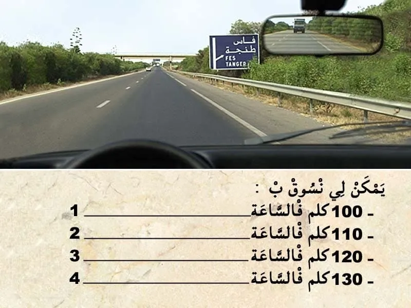
بيّن الجواب
الجواب الصحيح: 1 و 2 و 3
عندنا التشوير الطرقي و الحواجز و الخط المتاصل اقصى اليمين .
كيدل على أن هذا الطريق هي طريق سيار.
✅ و بالتالي السرعة محدودة في 120 كلم في الساعة.
يمكن لي نمشي بسرعة ما تقلش على 60 كلم في الساعة و ما تفوتش 120 كلم في الساعة.
⛔ 130 كلم في الساعة لا ما يمكنش ليا نمشي بها.السؤال 4
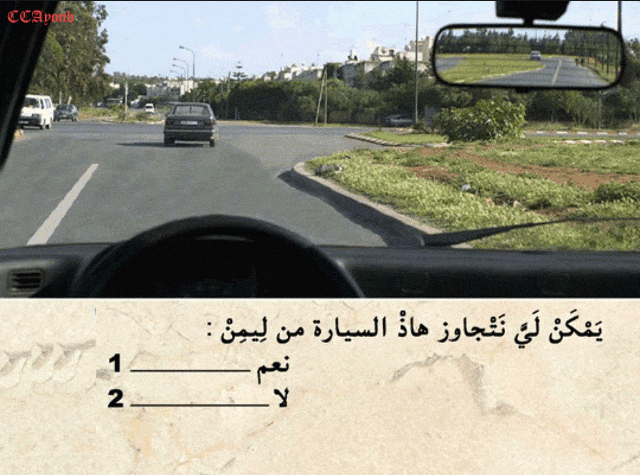
بيّن الجواب
الجواب الصحيح: 1
باش نتجاوز واجب عليا نتجاوز من جهت ليسر .
الا في هذا الحالة منين كتكون العربة لي قدامة غادي تغيير الإتجاه ليسر و انا غادي نكمل السير للقدام او غادي ندور على ليمن.السؤال 5
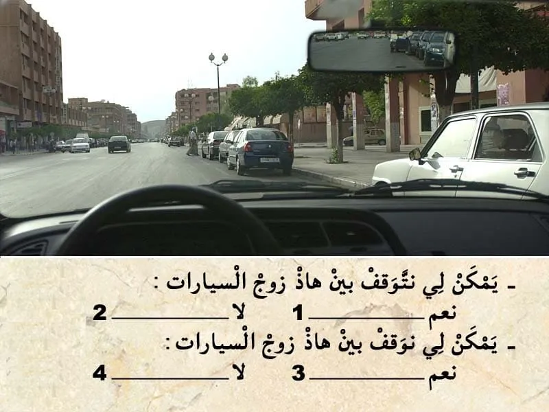
بيّن الجواب
الجواب الصحيح: 1 و 3
في هذا الحالة ما عندي حتى مانع كيمنع التوقف او الوقوف على جنب الطريق.
و بالتالي يمكن لي نوقف و نتوقف بين هذا زوج السيارات.السؤال 6
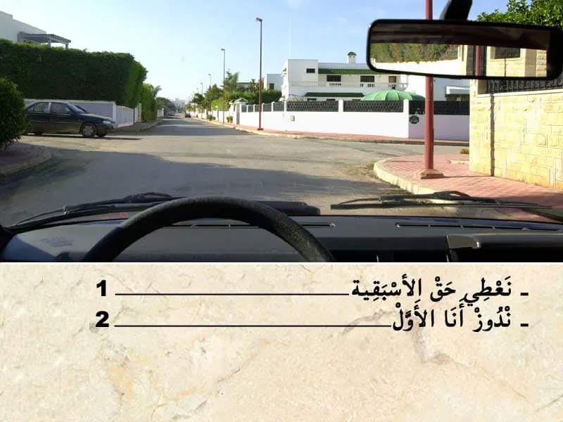
بيّن الجواب
الجواب الصحيح: 2
فهذا ملتقى الطرق بغياب التشوير الطرقي . الأسبقية للي جاي من جهت ليمن .
فهذا الحالة انا لي ليمن ديالي خاوي يعني انا لي ندوز الاول.السؤال 7
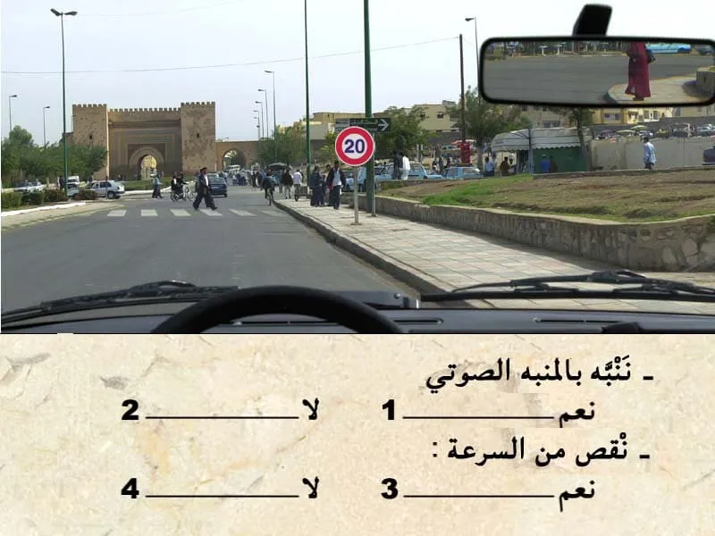
بيّن الجواب
الجواب الصحيح: 2 و 3
في هذا الحالة كاين ممر ديال الراجلين و بالتالي واجب عليا نعطي حق الأسبقية لهذا الراجلين .
و واجب عليا نقص السرعة حيت كاين علامة تحديد السرعة.السؤال 8
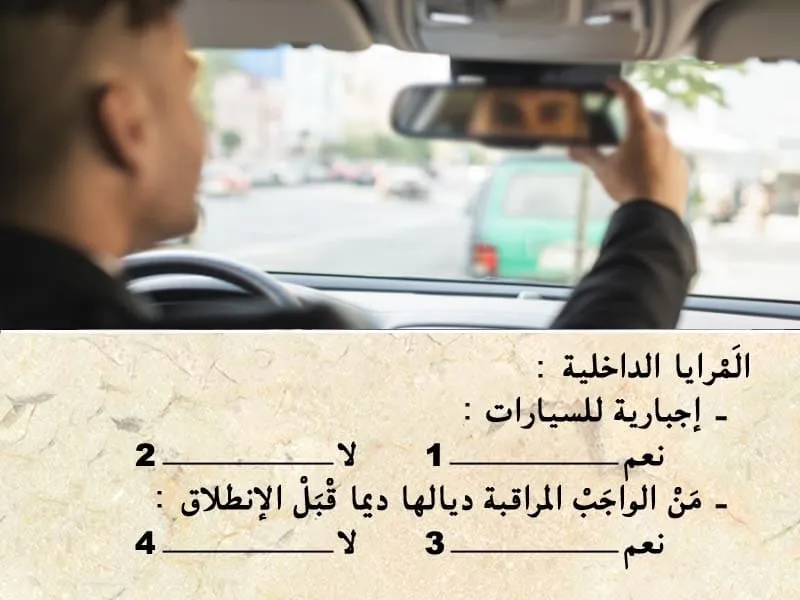
بيّن الجواب
الجواب الصحيح: 1 و 3
المرآة الداخلية إجبارية للسيارات و من الواجب المراقبة ديالها قبل ديما قيل الانطلاق.
السؤال 9
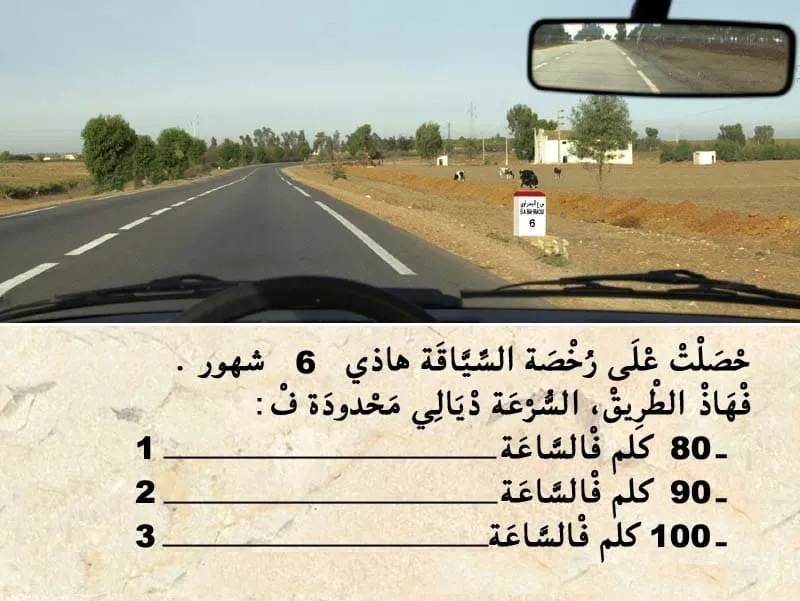
بيّن الجواب
الجواب الصحيح: 2
خلال الفترة الإختبارية السائق كيكون ممنوع عليه يمشي بسرعة اكبر من 90 كلم في الساعة .
في طريق وطنية السرعة محدودة في 100 كلم في الساعة و لكن ممنوع عليا نتجاوز 90 كلم في الساعة حتى تفوت علمين ديال الفترة الإختبارية.السؤال 10

بيّن الجواب
الجواب الصحيح: 2
تأمين المسؤلية المدنية لي هو التأمين الأدنى الإجباري .
في حالة كنت مسؤول على حادثة . التأمين ديالي كيعوض "المسؤلية المدنية" غيعوض الأضرار للي وقعات للسيارة الاخرى ضحية الحادثة.السؤال 11
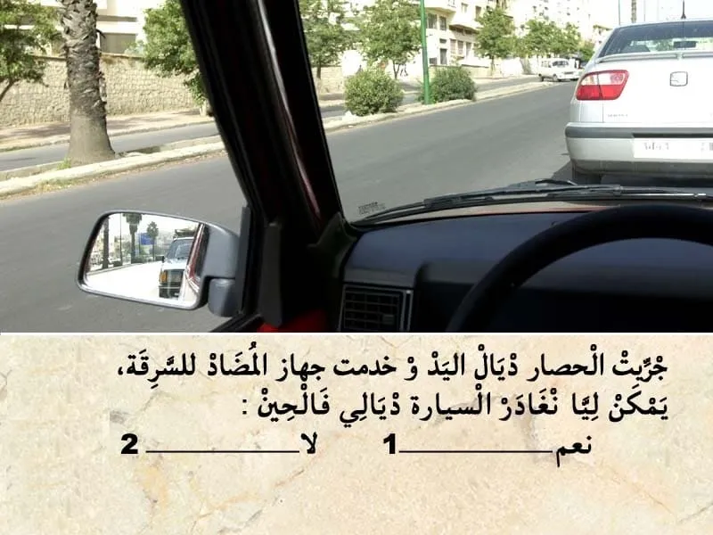
بيّن الجواب
الجواب الصحيح: 1
في هذا الحالة . انا متوقف و السيارة لي خلفي حتى هي متوقفة .
ليسر ديالي خاوي ما جاية حتى مستعمل طريق في جنبي و بالتالي يمكن لي نغادر السيارة ديالي فالحين.السؤال 12

بيّن الجواب
الجواب الصحيح: 1 و 2 و 4
يجب أن يخضع كل مترشح لاختبارات امتحان الحصول على رخصة السياقة لفحص طبي مسبق منجز من طرف طبيب معتمد وذلك بهدف التأكد من توفر المترشح على القدرات البدنية والعقلية الضرورية لسياقة مركبة على الطريق العمومية دون خطر وأنه غير مصاب بأي مرض من الأمراض المانعة للسياقة.
السؤال 13

بيّن الجواب
الجواب الصحيح: 1 و 3
السياقة تحت تأثير الكحول كتعتبر جنحة الا تجاوز نسبة الكحول في الهواء لي خارج من الفم 0.10 غ في الليتر.و كيتم خصم 6 نقاط . و يتم إقاف المركبة.
السؤال 14
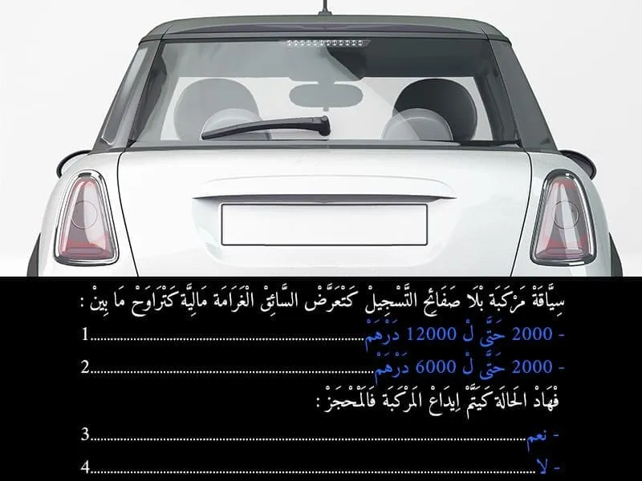
بيّن الجواب
الجواب الصحيح: 1 و 3
في حالة سياقة مركبة بلا صفائح التسجيل كتعتبر مخالفة و كتعرض السائق لغرامة مالية كتراوح ما بين:
- 2000 حتى ل 12000 درهم
و في هذا الحالة المركبة كيتم اداعها في المحجز . لعدم التوفر على رقم التسجيل .السؤال 15
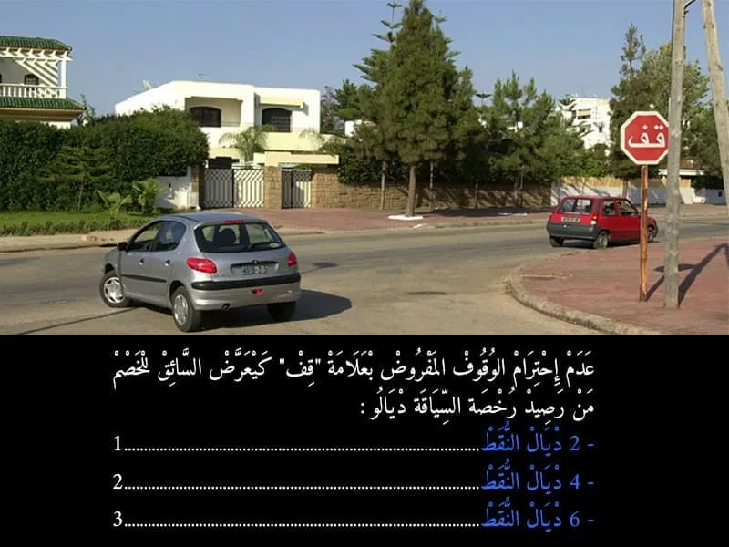
بيّن الجواب
الجواب الصحيح: 2
عدم احترام الوقوف الاجباري المفروض بعلامة قف كيتعتبر مخالفة من الدرجة الاولى. و كيتم خصم 4 نقاط من رصيد رخصة السياقة . و غرامة مالية 700 درهم .
- في حالة اداء الغرامة في اجل 24 ساعة كيأدي السائق لي ارتكب المخالفة 400 درهم .
- أما في حالة الاداء في اجل 15 يوم فثمن الغرامة هو 500 درهم .
- أما في حالة عدم الادء في اجل 15 كتصبح الغرامة 700 درهم .السؤال 16

بيّن الجواب
الجواب الصحيح: 2
هذا العربة دات الأولوية .مشغلة ضوء الاستعجال .
بالإضافة إلى أنها سبقت هي الأولى للقنطرة و بالتالي واجب عليا نعطيها حق الأسبقية.السؤال 17
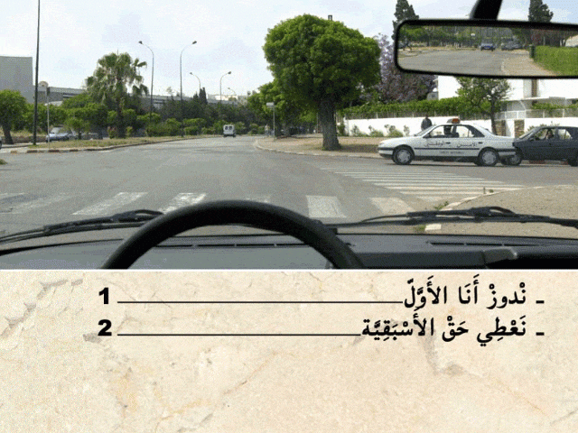
بيّن الجواب
الجواب الصحيح: 2
هذا العربة هي من العربات دات الأسبقية .
و مشعلة الضوء ديال الاستعجال و بالتالي واجب عليا نعطيها حق الأسبقية.السؤال 18

بيّن الجواب
الجواب الصحيح: 2 و 3
هذا الطريق هي طريق سيار.
و هذا المسلك هو مسلك ديال الوقوف الاستعجالي.
و بالتالي ما يمكنش لي نتوقف الا في حالة استعجالية.السؤال 19
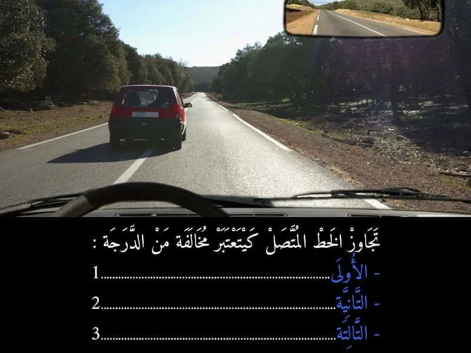
بيّن الجواب
الجواب الصحيح: 1
تجاوز الخط المتاصل كيتعتبر مخالفة من الدرجة الاولى. و لا يتم خصم نقاط من رصيد رخصة السياقة . و غرامة مالية 700 درهم .
- في حالة اداء الغرامة في اجل 24 ساعة كيأدي السائق لي ارتكب المخالفة 400 درهم .
- أما في حالة الاداء في اجل 15 يوم فثمن الغرامة هو 500 درهم .
- أما في حالة عدم الادء في اجل 15 كتصبح الغرامة 700 درهم .السؤال 20
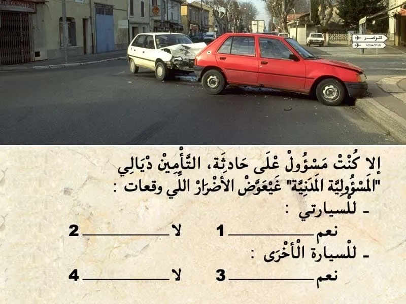
بيّن الجواب
الجواب الصحيح: 2 و 3
تأمين المسؤولية المدنية "الطرف الثالث" ꓽ
✔ يعتبر تأمين الطرف الثالث أبسط صيغة للتأمين وأقلها تكلفة مالية.
✔ يتعين على جميع مالكي المركبات بموجب القانون تحمل تأمين المسؤولية المدنية "طرف ثالث" على الأقل لحماية مستعملي الطريق الآخرين.
✔ يغطي تأمين مسؤولية المركبات تكاليف الأضرار المادية والإصابات الجسدية التي تلحق بطرف ثالث والتي قد يكون السائق مسؤولاً عنها.السؤال 21
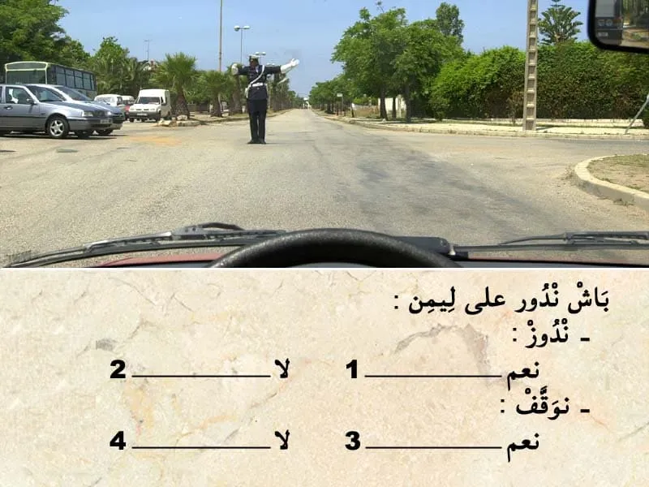
بيّن الجواب
الجواب الصحيح: 2 و 3
في هذا الحالة الشرطي عاطي إشارة للسيارات لي على ليسر باش تدوز .
و بالتالي نوقف و ننتظر إشارة شرطي المرور.السؤال 22
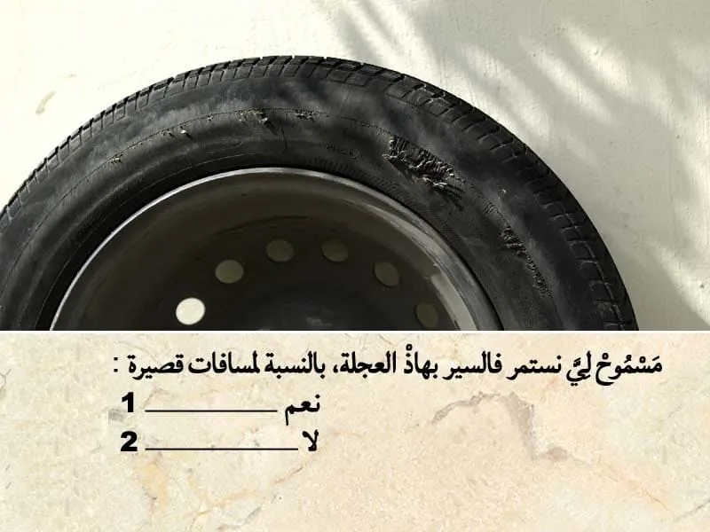
بيّن الجواب
الجواب الصحيح: 2
هذا العجلة في حالة سيئة و بالتالي اصبحت غير صالحة للسير.
و بالتالي غير مسموح نستمر فالسير بهذا العجلة .السؤال 23

بيّن الجواب
الجواب الصحيح: 1
هذا العلامة . هي علامة ديال الخطر .
- كتعلم على منعرجات متتالية. المنعرج الاول داير على ليسر . و الثاني داير على ليمن.
و بالتالي الجواب الصحيح هو رقم 1.السؤال 24
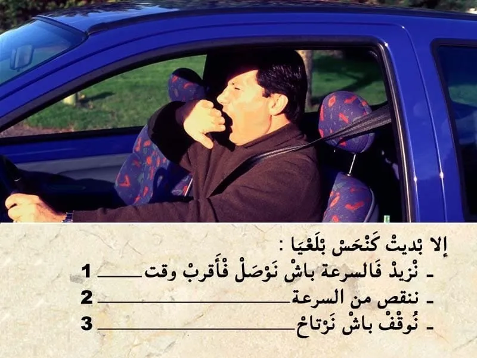
بيّن الجواب
الجواب الصحيح: 3
بمجرد ما السائق يبدى يحس بالنعاس.
كيتوجب عليه يوقف باش يرتاح . حيت ممكن في اي لحظة يباغته النعاس .السؤال 25

بيّن الجواب
الجواب الصحيح: 3
الضوء الأصفر كيعلم على انه مباشرة غادي يشعل الضوء الاحمر و بالتالي نوقف.